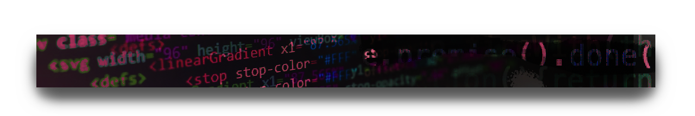

Week 5: Digital Narratives: Interactivity, Inputs & Outputs

Illustration by Icons 8 from Ouch!
For our last homework, add some interactive component to yout zine, maybe something appears or transforms or moves. Use the templates from our activity today to help you get started. What kind of world can exist here? What does it look, feel, smell, taste like? Utilize our combined skills throughout the course to incorporate interactivity.
PS: Our last class will be comprised of short 5 min presentations. Please sign up for a presentation here.